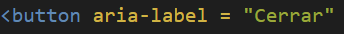

Tecnicas HTML
10 técnicas HTML:
1 Uso del atributo de idioma en el elemento HTML .
El objetivo de esta técnica es identificar el idioma predeterminado de un documento proporcionando el atributo lang en el elemento html.
2 Uso del atributo de título para proporcionar ayuda sensible al contexto.
El objetivo de esta técnica es proporcionar ayuda sensible al contexto para los usuarios a medida que ingresan datos en formularios al proporcionar la información de ayuda en un atributo title. .
3 Uso de aria-labelledby para proporcionar un nombre para los controles de la interfaz de usuario .
El propósito de esta técnica es proporcionar nombres para los controles de la interfaz de usuario que puedan leerse con tecnología de asistencia. WAI-ARIA proporciona una forma de asociar texto con una sección, dibujo, elemento de formulario, imagen, etc., utilizando la propiedad aria-labellebdy. Asociando un control de interfaz de usuario, como un campo de formulario, con el texto de la página que lo etiqueta.
4 Uso de aria-describedby para proporcionar descripciones de imágenes .

Esto es una descripcion con aria-describedby sobre la imagen de arriba que es la de el propio codigo que uso.
5. Usar aria-label para proporcionar una etiqueta invisible donde no se puede usar una etiqueta visible.
Para los usuarios videntes, el contexto y la apariencia visual de un elemento pueden proporcionar pistas suficientes para determinar el propósito. Un ejemplo es la 'X' que se usa a menudo en la esquina superior derecha de los divs emergentes (cajas de luz) para indicar el control para cerrar el div.
6 Indicación de los controles de formulario requeridos mediante etiqueta label o leyenda.
El objetivo de esta técnica es proporcionar una indicación clara de que se requiere un control de formulario específico en una aplicación web o formulario para el envío exitoso de datos.
7 Asegurar que los atributos id sean únicos en una página web.
8 Usar h1-h6 para identificar encabezados.
9 Usar ol, ul y dl para listas o grupos de enlaces.
10Proporcionar elementos de encabezado al comienzo de cada sección de contenido
El objetivo de esta técnica es utilizar títulos de sección para transmitir la estructura del contenido.